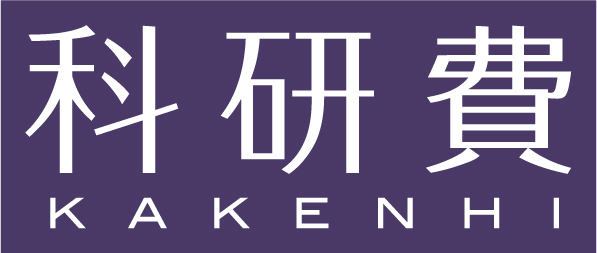

CTFM 2018
Workshop on Computability Theory and Foundations of Mathematics 2018
Surugadai Campus, Meiji University, Tokyo, Japan. 13--15 September, 2018

About this workshop
Computability Theory and Foundations of Mathematics (CTFM) aims to develop computability theory and logical foundations of Mathematics. The scope involves the topics Computability Theory, Reverse Mathematics, Nonstandard Analysis, Proof Theory, Set Theory, Philosophy of Mathematics, Constructive Mathematics, Theory of Randomness and Computational Complexity Theory.
This is one of the CTFM conference series.
This workshop is supported by Meiji University and JSPS KAKENHI Grant Numbers JP16K12399 and JP18H03203.
News
- 10 Sep, 2018: The programme was updated. The link to the restauran for the banquet was added.
- 31 Aug, 2018: The tentative programme was added.
- 9 July, 2018: The important dates were added.
- 18 May, 2018: The information of accommodation was added.
- 10 Apr, 2018: The website was uploaded.
Invited Speakers
- George Barmpalias (Chinese Academy of Sciences)
- Matthew de Brecht (Kyoto University)
- Bjorn Kjos-Hanssen (University of Hawaii at Manoa)
- Tomoyuki Miyaji (Meiji University)
- Igor Potapov (University of Liverpool)
- Liang Yu (Nanjing University)
Organising Committee
- Akitoshi Kawamura (Kyushu University)
- Kenshi Miyabe (Meiji University)
Local Arrangements
Conference Venue
The conference venue is room 1123 (12th floor) in Liberty Tower, Surugadai Campus, Meiji University. See this page and this page for access information.
Accommodation
There are many hotels near the venue. Search at your favorite hotel booking site.
If you do not have any preference, we recommend HOTEL MYSTAYS Ochanomizu CC. It would be convinient to discuss with each othter.
Cotact Info
Send a mail to "research@kenshi.miyabe.name".
Schedule
Submission
The official deadline was over. Please ask the organizers if you have not submitted but want to give a talk.
Registration
You can attend without prior registration.
The registration fee is as follows. The payment is cash-only, and at the registration.
- 2,000 yen for general
- free for students
Banquet
The banquet will be held in the evening on 14th September, 2018.
If you have not registered but want to participate, please tell an organizer by the previous day, 13th September.
The banquet fee is as follows. The payment is cash-only, and at the registration.
- 5,000 yen for general
- 3,000 yen for students
- 3,000 yen for accompanying person
The resutrant is Esuperia, 18:00 start
Timetable
Programme (9-Sep version)
Link
- CTFM series
- WIAS Seminar: “The epsilon calculus with equality predicate and Herbrand complexity”, September 10, in Waseda.
- Symposium on Advances in Mathematical Logic 2018, September 18 (Tue) - 20 (Thu), 2018 in Kobe.
